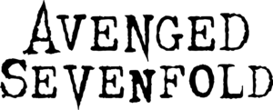
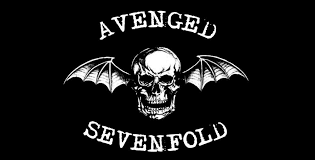
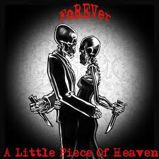

Avenged Sevenfold
Avenged Sevenfold es una banda estadounidense de heavy metal originaria de Huntington Beach, California, fundada en 1999.
 
INTEGRANTES
- M. Shadows (vocalista)
- Synyster Gates (guitarrista líder y coros)
- Zacky Vengeance (guitarrista rítmico y coros)
- Johnny Christ (bajista)s
ANTERIORMENTE
- El baterista y vocalista era The Rev hasta su muerte en diciembre de 2009
- Mike Portnoy, el exbaterista de Dream Theater
Canción favorita:
Little piece of heaven
